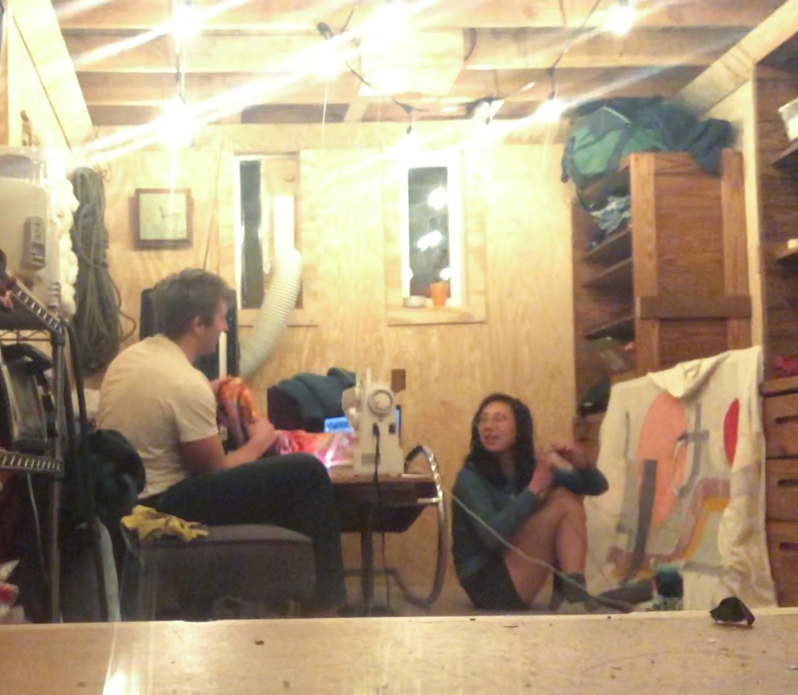

Color Factory
Punch needling is something I've always wanted to try — you can basically turn any design into a fiber art rug or wall art, how cool is that?! I watched a few tutorial videos by CurrieGOAT and decided to go for it! I've always loved the crisp lines contrasted by organic curves of mid-century modern design, and "Color Factory" is my take on fusing that style with a little Regina-flourish of quirky cutouts.
I initially designed this rug's shape to perfectly fit a specific part of my room, but punch needling ended up taking so long that I hauled it with me on a road trip to both New York and Kansas, where it now hangs on the wall (ah yes, another wall hanging) in our guest room.
Concept sketch of the rug -- I particularly focused on color overlap (which would translate to different heights of punch needled yarn --> more depth) and empty spaces (add a little element of fun and surprise)
Phase 1 - DC: I sketched the outlines on monk's cloth from Joann's (which I have since discovered is not the kind of monk's cloth one should be using for punch needling), and started getting a hang of punch needling
Phase 2 - New York: I had hoped to finish my project when I was in my home in DC, but alas one week was too aggressive of a timeline. I ended up finishing the bulk of the project back during leisurely craft evenings in the New York barn (the white floofs of Flow are along the left wall!)

Phase 3 - Kansas, the final resting place: I lugged this rug over to my family's home in Kansas where I finally finished the rug! Here I'm trimming the loose ends. All that was left was cutting out the bare sections and whip-stitching the entire border
Claimed by DOG
Close-up of the whip-stitched border! Oddly satisfying, but very time-consuming (as is this entire project haha!). Happy and proud to be done :)
Previous Project
Pilot
Next Project
Flow